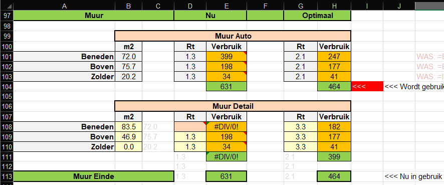

Ook hier weer 2 blokken (aangeduid door de roze cellen), waarvan de bovenste blok (ingevuld door de vragen op de basis pagina) gebruikt als u niets veranderd.
Zodra de roze cel wordt ingevuld, wordt het tweede blok gebruikt voor de berekening.
Opdat moment heeft u ook de andere van belang zijnde parameters helemaal onder controle, zoals
Je ziet nu ook hoeveel gas er "verbruikt" wordt door de individuele muren, nu en na verbetering van de isolatie.
Dus het tweede blok geeft ook de mogelijkheid om te toetsen wat verschillende isolatie parameters zullen gaan opleveren.
